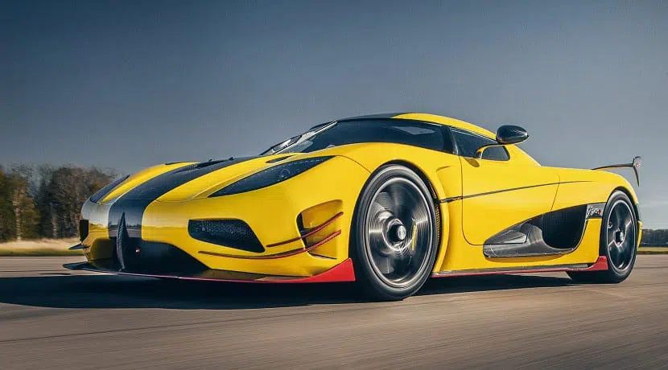

a continuacion un top de los 3 autos mas rapidos del mundo
Koenigsegg Agera RS, velocidad maxima 447.2 km/h
Hennessey Veron GT, velocidad maxima 435.3 km/h
Bugatti Veyron Super Sport, velocidad maxima 432 km/h
estas son algunas de las principales carecteristicas en comun de estos vehiculos